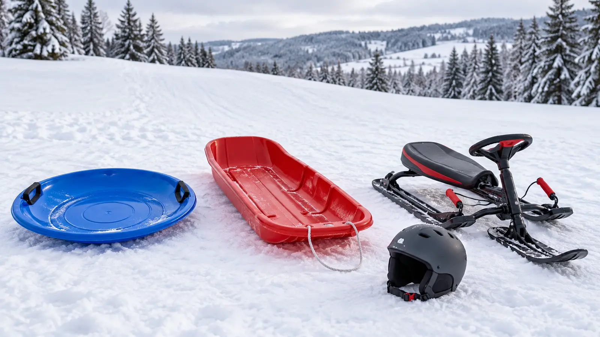

Kids’ Sleds: Saucer vs Toboggan vs Steering Sled—and the Hill Gate
The hill decides before the sled does. Gate the location, supervision and runout first; then choose the least-complicated category that fits the rider, load and real walk back up.

Original AI-assisted editorial category image. It shows generic sled formats and a general helmet reminder—not tested products, exact models, current availability, certifications or a claim that any hill is safe.
Safety scope: sledding carries collision, head-injury, cold and terrain risks. An adult must inspect the actual hill and enforce local rules every session. Follow the exact sled and helmet instructions, age/weight/passenger limits and current recall notices. No sled type makes a road, parking-lot runout, tree line, fence, drop, water edge or towing setup safe.
The hill gate comes before shopping
Do not buy around a fantasy hill. Stand at the real top and bottom without children riding. The American Academy of Pediatrics advises keeping sledders away from vehicles and trees, supervising children under 12, separating younger children from older riders, riding seated or feet first instead of head first, and considering a helmet. Nationwide Children’s adds fences, poles, rocks, streets, parking lots, drop-offs, rivers and ponds to the hazard list and says never tow a sled behind a motor vehicle.
If the slope has an unsafe obstacle or runout, choose another hill. If the local park posts a closure or sledding rule, that rule controls. If an adult cannot see the route and bottom, the session does not start. Product steering and brakes are not permission to use a bad location.
Saucer vs toboggan vs steering sled
Saucer or disk
Fits: one rider where spinning and limited directional control are acceptable. Tradeoff: simple carry; hard to steer. Not the default for a narrow or busy lane.
Open toboggan
Fits: straight, gentle runs and the exact passenger count printed by the maker. Tradeoff: more room and easier gear hauling; limited active steering.
Steering sled
Fits: a rider who can reach, understand and operate the exact controls. Tradeoff: directional input; heavier, costlier and not an obstacle-avoidance guarantee.
Foam slider
Fits: compact storage and a simple seated ride when the maker permits. Tradeoff: light carry; durability, handles and control vary by construction.
Snow tube
Fits: controlled tubing venues built for tubes. Tradeoff: cushioned ride; difficult to steer. Nationwide Children’s specifically favors tubing parks for this category.
Plastic improvised object
Fits: nothing. Tradeoff: no documented rider limit, controls, construction or instructions. Use a purpose-built sled.
Buying rule: if the rider cannot control, carry and exit the exact sled, it does not fit—even when the weight number does.
The seven-line compatibility card
Rider: current height, weight, reach, coordination and ability to follow one-rider-at-a-time rules.
Capacity: the exact maker’s age, weight and passenger limits; never infer “two kids” from a long seat.
Position: a stable seated, feet-first posture with hands able to hold the intended handles.
Controls: reach and operation while wearing winter gloves; practice on flat snow before the hill.
Construction: no cracks, sharp edges, damaged rope, loose fasteners or control problems.
Recall: brand, model and date checked in the CPSC recall database—before buying used and at the start of each season.
Carry: loaded vehicle fit and a walk-back-up plan that does not put a rope around a neck or drag into another lane.
Helmet and clothing are separate decisions
The AAP recommends considering a helmet for sledding and separately tells families that helmets reduce snow-sport head risk. That does not authorize a random helmet or a bad hill. Use a helmet the manufacturer states is intended for the activity, confirm current fit and replacement criteria, and follow every instruction. A qualified clinician can address medical questions; the helmet maker can answer activity and fit questions.
Dress for the actual temperature, wind, wetness and time outside. Choose fitted layers without loose drawstrings or dangling straps that can catch. Wet gloves and pants shorten a safe session. The snow-pants bathroom and fit guide, hand-warmer recall gate and glove dexterity check solve those separate problems.
What not to buy
A marketplace sled with no traceable maker, model, instructions or rider limits.
A used sled with unreadable labeling, a crack, brittle plastic, bent runner, damaged rope or unverified recall status.
A high-speed claim presented as a benefit for children.
A steering sled whose bar, brake or seat does not fit the actual rider in winter clothing.
A multi-rider sled when the household will ignore the printed passenger limit.
A tube for an uncontrolled neighborhood hill because it looks soft.
Any sled purchased to make an unsafe hill seem acceptable.
The five-minute lane briefing
Adult walks the entire lane and runout; weather, ice, crowding and obstacles get a new check every session.
Name the start line, stop area, climb-up route and one-at-a-time signal.
Rider sits facing forward and goes feet first; no standing, head-first riding or towing.
The bottom rider clears the runout and signals before the next launch.
Stop for poor visibility, hard ice, damaged gear, numbness, soaked clothing, control loss or a changing crowd.
Saucer: a single capable rider on a broad, clear, controlled lane where spin is accounted for. Toboggan: a straight gentle hill, simple seated posture and only the maker-approved number of riders. Steering sled: an older or coordinated rider whose reach and judgment match the controls. Tube: preferably a staffed tubing park with a purpose-built lane and its own rules. Skip all of them: when the hill, supervision, weather, fit or recall check is not clean.